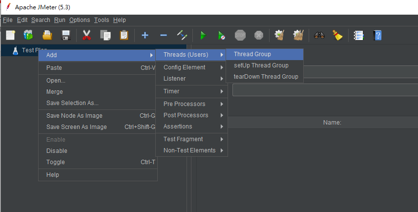
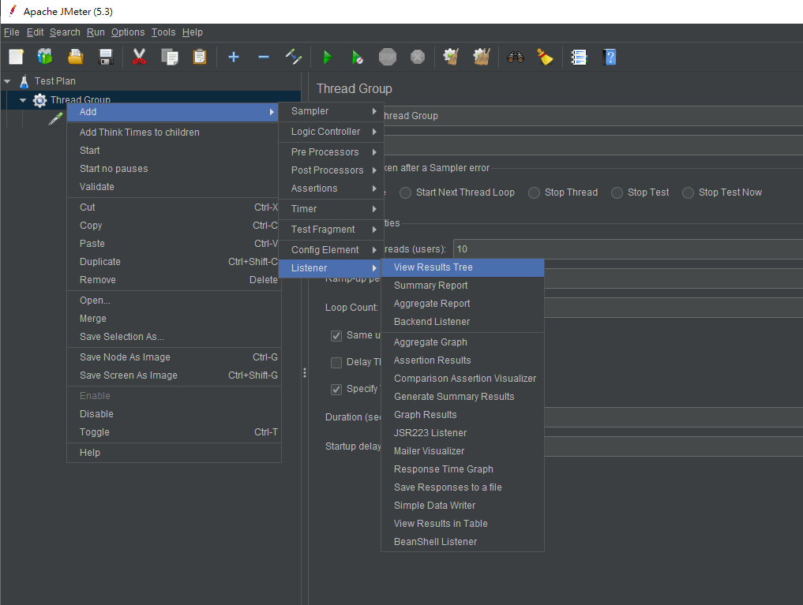

上次我們說到JMeter的安裝，這次來說說網頁壓力測試。一起來看看吧！
JMeter壓力測試
主要是指定頁面裡在時間內有多少人進入頁面。
我們先用以下二種做測試：
1. 一秒內10個人進入Google首頁
2. 一秒內10個人進入Google網頁，三分鐘後自動停止
JMeter前置作業
1.開啟 JMeter 的方式請參考 網站測試工具-JMeter教學 ，預設開啟後就會有一個測試計畫。

2.如果有需要中文的話，可以在功能列Options選項的Choose Language 改為中文Chinese(Traditional) 。
註：但不建議改中文，因為翻譯的中文會有點怪，也不是每個項目都有翻譯到。
JMeter網頁測試設定
1.建立Thread Group(執行緒群組)。
滑鼠在測試計畫點右鍵，選擇Add -> Threads(Users) -> Thread Group

2.設定人數10人、時間一秒、三分鐘後自動停止
Thread Properties
Number of Threads(users) = 10
Ramp-up period(seconds) = 1
Specify Thread lifetime = 勾選
Duration(seconds) =180

3.建立HTTP Request(Http要求)
滑鼠在Thread Group(執行緒群組)點右鍵，Add -> Sampler -> HTTP Request

註：這個就是http request，當我們要測試Web Api的時候通常都會有Http request去請求Api，可以在裡面設定Api路徑，用什麼請求方式等等。
4.指定要測試的網頁(如下圖紅框)，這邊使用google首頁
Protocol[http] = https
Server Name or IP= www.google.com.tw
Path = 空值 (填寫 / 和之後的訊息)

5.建立report可用產生的數據來了解壓力測試的效能
滑鼠在Thread Group(執行緒群組)點右鍵，Add -> Listener -> View Results Tree(偵聽器)

6.執行壓力測試。點擊「Start」(下圖紅框的綠色鍵頭)

7.會要求先存檔，請點擊「Yes」button
測試結果
1. 測試失敗：View Results Tree(偵聽器)會標示紅色

2. 執行成功：View Results Tree(偵聽器)會顯示綠色

繼上一次的JMeter安裝，以上就是本篇的網頁壓力測試教學，大家都瞭解了嗎～喜歡歐斯瑞文章的讀者們，記得追蹤我們的FB粉絲團及IG，也別忘了訂閱電子報，就不會錯過第一手的最新消息囉！有問題也歡迎聯繫我們喔！
留下回應